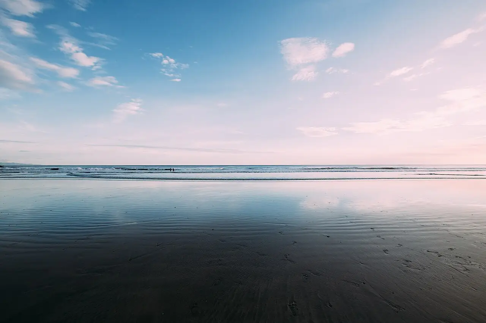

Playa Maderas
Rivas, Nicaragua · surf, bodyboard

Plage de sable encadrée de collines boisées au nord de San Juan del Sur. Grâce au grand lac Nicaragua voisin, le vent souffle souvent de terre et garde les vagues propres une bonne partie de l’année.
- Lieu
- Rivas, Nicaragua
- Niveau
- Intermédiaire
- Activités
- surf, bodyboard
- Type d'eau
- Mer / océan
- Coordonnées
- 11.29, -85.91 (position approximative du secteur)
Dangers à connaître
- Rochers aux extrémités de la plage, à fleur d’eau à marée basse.
- Courants d’arrachement quand la houle grossit.
Le conseil d'Ocean Buddy
Prends une navette depuis San Juan del Sur et garde un œil sur les rochers aux deux extrémités de la plage.
Ouvrir dans Ocean Buddy Télécharger sur l'App Store
Source : Fiche Ocean Buddy · septembre 2026 · à vérifier localement.